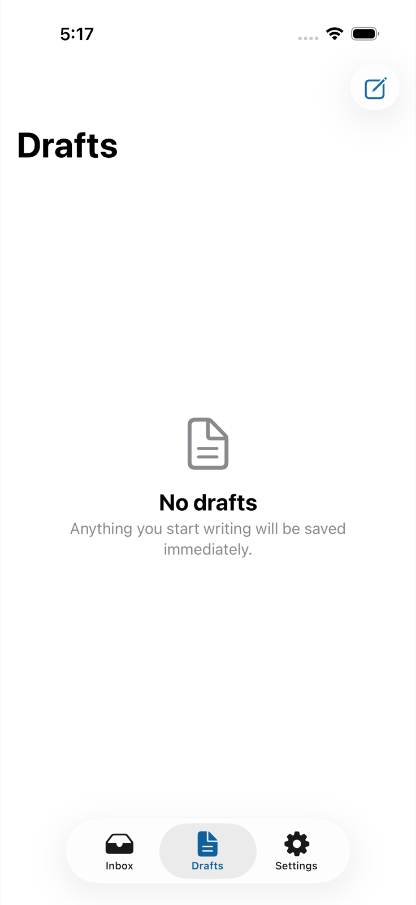

Light appearance



Fixture-backed iPhone 17 validation of the real inbox, reader, search, reply draft recovery, one-time send, long HTML rendering, and Settings.



Run apps/ios/OrcaUITests/run-fixture-tests.sh <connection.json> <simulator-udid> [derived-data-path]. The synthetic bearer is read from fixture metadata, injected only into a copied .xctestrun, and never printed or committed.
Simulator notification delivery/tap was not exercised in this pass; notification ownership and routing are covered by unit tests.